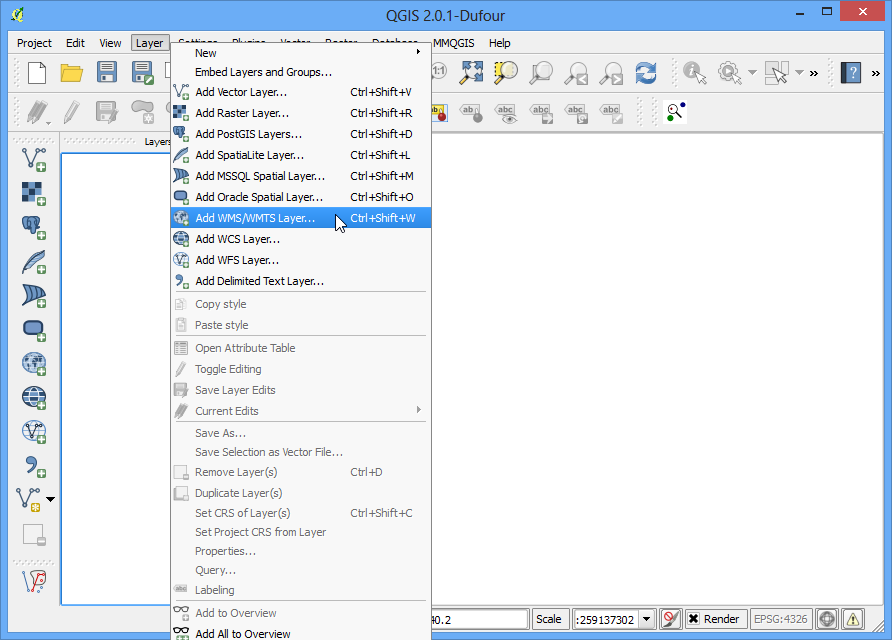
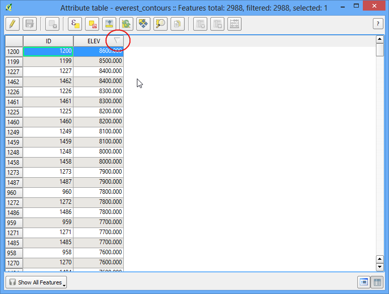
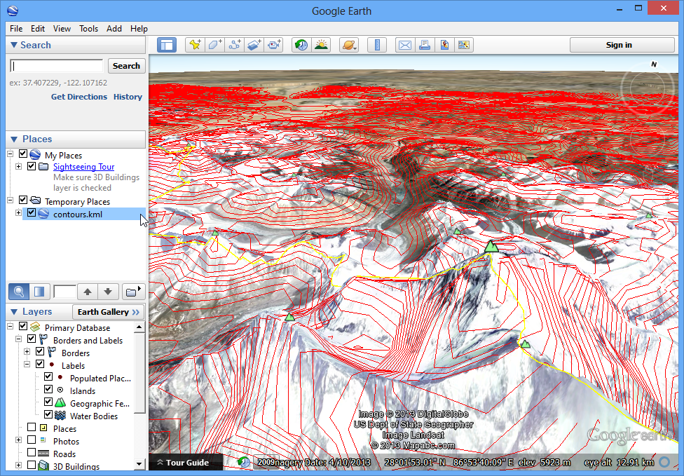

Lucrul cu date despre teren
Datele despre teren, sau despre altitudine, sunt utile pentru multe Analize GIS, fiind folosite, adesea, în cadrul hărților. QGIS are bune capacități de procesare internă a terenului. În acest tutorial, vom parcurge pașii necesari obținerii, din datele de elevație, a diverselor rezultate, cum ar fi curbele de nivel, relieful etc.
Privire de ansamblu asupra activității
Sarcina este de a crea hărțile reliefului și a curbelor de nivel, pentru zona din jurul Mt. Everest.
Alte competențe pe care le veți dobândi
Găsirea și descărcarea datelor despre teren, disponibile în mod gratuit.
Exportarea în format KML a unui strat vectorial, precum și vizualizarea sa în Google Earth.
Obținerea datelor
Vom lucra cu setul de date GMTED2010 de la USGS. Aceste date pot fi descărcate de pe site-ul USGS Earthexplorer. GMTED (Global Multi-resolution Terrain Elevation Data) este un set de date despre teritoriul global, fiind, de fapt, o versiune mai nouă a setului de date GTOPO30.
Iată cum să căutați și să descărcați datele revelante de la USGS Earthexplorer.
Mergeți la USGS Earthexplorer . În fila Search Criteria căutați denumirea Mt. Everest. Efectuați clic pe rezultat pentru a selecta locația.

În fila Data Sets expandați grupul Digital Elevation și bifați GMTED2010.

Puteți sări acum la fila Results pentru a vedea acea parte a setului de date care satisface criteriile dvs. de căutare. Efectuați clic pe butonul Download Options. După care, va trebui să vă conectați la site. Puteți să vă creați un cont gratuit, dacă nu aveți unul.

Selectați opțiunea 30 ARC SEC și efectuați clic pe Select Download Option.

Acum, veți avea acum un fișier numit GMTED2010N10E060_300.zip. Datele altitudinii sunt distribuite în diverse formate raster, cum ar fi ASC, BIL, GeoTiff etc. QGIS suportă o gamă largă de formate raster prin intermediul bibliotecii GDAL. Datele GMTED vin sub formă de fișiere GeoTIFF, care sunt incluse în această arhivă zip.
Pentru comoditate, puteți descărca o copie a datelor direct de mai jos.
GMTED2010N10E060_300.zip
Sursa de date: [GMTED2010]
Procedura
Deschideți și navigați la fișierul zip, descărcat anterior.

Există o diversitate de fișiere, generate de algoritmi diferiți. Pentru acest tutorial, vom folosi fișierul numit 10n060e_20101117_gmted_mea300.tif.

Datele terenului vor fi afișate în suportul de hartă al QGIS. Fiecare pixel din raster reprezintă altitudinea medie a acelei locații, în metri. Pixelii întunecați reprezintă zonele cu altitudine joasă, iar pixelii mai luminoși zonele cu altitudine mare.

Haideți să găsim zona noastră de interes. De la Wikipedia, aflăm că zona noastră de interes - Mt. Everest - se situează la coordonatele 27.9881° N, 86.9253° E. Rețineți că QGIS utilizează coordonatele în format (X, Y), așa că va trebui să utilizăm coordonatele ca (Longitudine, Latitudine). Copiați și lipiți următoarele coordonate, 86.9253,27.9881, în partea de jos a ferestrei QGIS în care scrie Coordinate și apăsați Enter. Imaginea se va fi centra pe aceste coordonate. Pentru a mări harta, introduceți 1:1000000 în câmpul Scale și apăsați Enter. Portul de vizualizare se va mări, cuprinzând zona din jurul munților Himalaya.

Vom decupa rasterul după zona de interes. Selectați instrumentul Clipper din .
Note
Meniul Raster din QGIS provine de la un plugin numit GdalTools. Dacă nu vedeți meniul Raster, activați plugin-ul GdalTools din . Pentru mai multe detalii, parcurgeți Utilizarea Plugin-urilor.

În fereastra Clipper, denumiți fișierul de ieșire ca everest_gmted30.tif. Alegeți Extent pentru Clipping mode.

Păstrați fereastra Clipper deschisă și comutați la fereastra principală a QGIS. Țineți apăsat butonul stâng al mouse-ului, apoi glisați, trasând un dreptunghi care să acopere complet suportul de hartă.

Înapoi, în fereastra Clipper, veți vedea coordonatele auto-populându-se conform selecției dvs. Asigurați-vă că opțiunea Load into canvas when finished este bifată, apoi faceți clic pe OK.

O dată cu încheierea procesului, veți vedea un nou strat încărcat în QGIS. Acest strat va acoperi doar zona din jurul Mt. Everest. În acest moment suntem gata să generăm curbele de nivel. Selectați instrumentul corespunzător din .

În fereastra de dialog Contour, selectați everest_gmted30 ca Input file. Denumiți Output file for contour lines ca everest_countours.shp. Vom genera curbele de nivel pentru intervale de 100 de metri, așa că introduceți 100 în Interval between contour lines. Bifați, de asemenea, opțiunea Attribute name, astfel că valorile altitudinii vor fi înregistrate ca atribut al fiecărei curbe. Faceți clic pe OK.

O dată ce prelucrarea este completă, veți vedea curbele de nivel încărcate în suportul hărții. Fiecare linie din acest strat reprezintă o anumită altitudine. Toate punctele de pe o curbă de nivel a rasterului de bază vor fi la aceeași altitudine. Cu cât sunt mai apropiate liniile, cu atât e mai abruptă panta. Să analizăm curbele ceva mai mult. Faceți clic dreapta pe stratul acestora și alegeți Open Attribute Table.

Veți vedea că fiecare entitate de tip linie are un atribut numit ELEV. Acesta reprezintă înălțimea în metri a fiecărei linii. Faceți clic pe antetul de coloană de câteva ori, pentru a sorta valorile în ordine descrescătoare. Astfel, veți găsi linia care reprezintă cea mai mare altitudine din datele noastre, și anume Mt. Everest.

Selectați rândul de sus, și faceți clic pe butonul Zoom to selection.

Treceți la fereastra principală QGIS. Veți vedea că linia selectată este evidențiată cu galben. Aceasta este zona cu cea mai mare altitudine din setul nostru de date.

Acum, haideți să creăm o hartă a reliefului din raster. Selectați .

În fereastra de dialog DEM (Terrain Models), alegeți everest_gmted30 ca Input file. Denumiți Output file ca everest_hillshade.tif. Alegeți Hillshade pentru Mode. Lăsați toate celelalte opțiuni așa cum sunt. Asigurați-vă că opțiunea Load into canvas when finished este bifată, și faceți clic pe OK.

O dată ce procesul se termină, veți vedea un alt raster încărcat în suportul de hartă QGIS. Din moment ce, eventual, ați mărit harta pentru a fi mai aproape de regiunea Mt. Everest, faceți clic dreapta pe stratul everest_hillshade și alegeți Zoom to Layer Extent.

Acum, se vede relieful întregii suprafațe a rasterului.

De asemenea, puteți vizualiza stratul curbelor de nivel, apoi să vă verificați analiza, prin exportarea în format KML a stratului curbelor de nivel, și afișarea lui în Google Earth. Faceți clic dreapta pe stratul curbelor de nivel, după care selectați Save as...

Selectați Keyhole Markup Language [KML] ca Format. Denumiți ieșirea ca contours.kml, după care faceți clic pe OK.

Navigați la fișierul de ieșire de pe disk, și efectuați dublu-clic pe el pentru a-l deschide în Google Earth.
